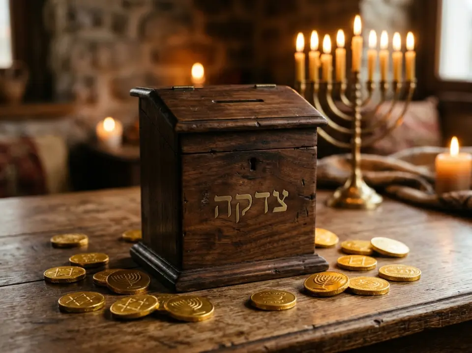

El juego del Dréidel (Sevivón)
Cuando el rey Antíoco prohibió el estudio de la Torá, los niños judíos se reunían en secreto para estudiar. Si se acercaba una patrulla griega, escondían los pergaminos y sacaban sus peonzas fingiendo estar jugando. En homenaje a su valentía, jugamos al dréidel (del yidis drei, «girar»), una peonza de cuatro caras con las letras hebreas Nun (נ), Guímel (ג), Hei (ה) y Shin (ש), iniciales de Nes Gadol Haiá Sham («Un gran milagro ocurrió allí»).
Empiezas con 10 monedas y hay 10 en el bote. ¡Gira el dréidel!
- נNun · NishtNada: no pones ni coges nada.
- גGuímel · GantzTodo: te llevas todo el bote.
- הHei · JalbMitad: te llevas la mitad del bote.
- שShin · ShtelPon: añades una ficha al bote.
¿Cómo se juega?
Cada jugador aporta la misma cantidad de monedas de chocolate, frutos secos o fichas al bote común. Por turnos, cada uno hace girar el dréidel y sigue lo que indica la letra que queda arriba.
¿Sabías que…?
En la Tierra de Israel los dréidels llevan una Pe (פ) en lugar de la Shin: Nes Gadol Haiá Po, «un gran milagro ocurrió aquí».
Janucá Guelt (monedas de Janucá)
Es costumbre regalar dinero o monedas de chocolate (Janucá Guelt) a los niños durante la festividad. La palabra Janucá comparte raíz con Jinuj («educación»). Esta tradición busca incentivar su estudio de la Torá y enseñarles desde pequeños el valor de la Tzedaká (caridad y justicia social), animándoles a destinar una parte de su dinero a ayudar a los demás.
